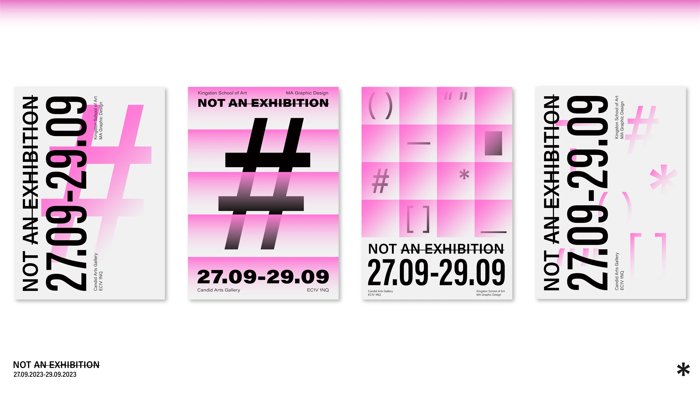
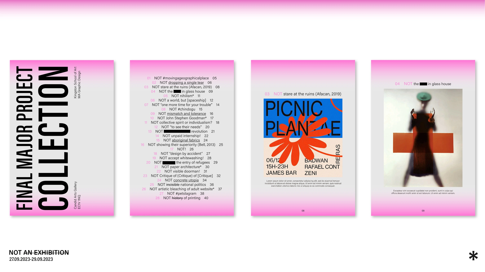
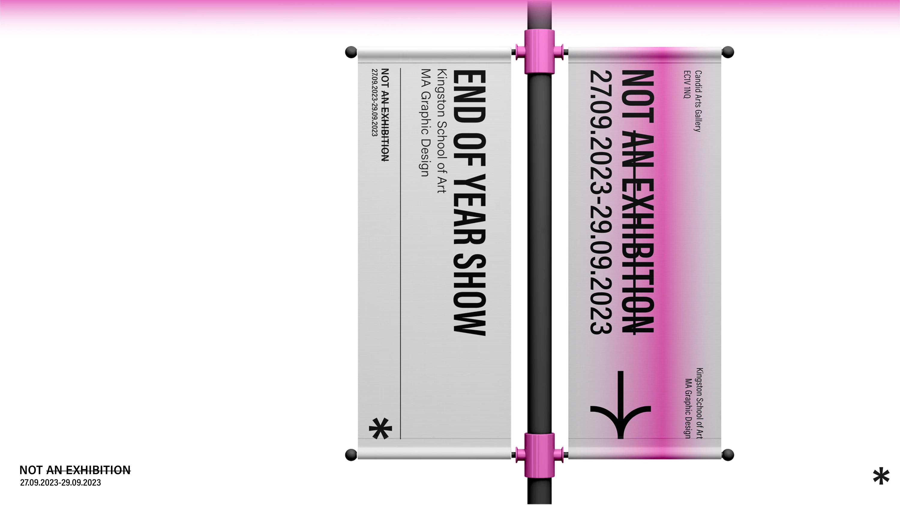
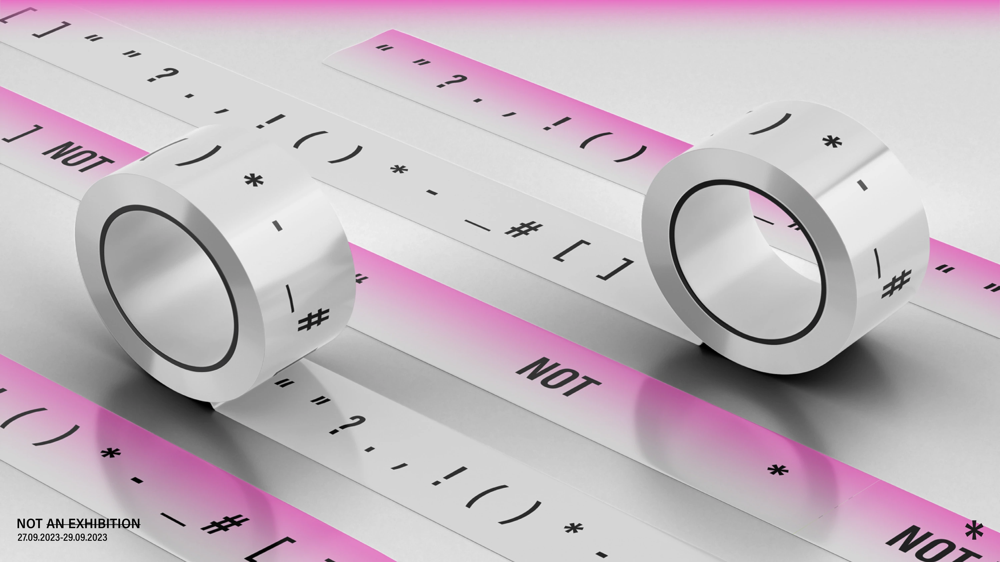
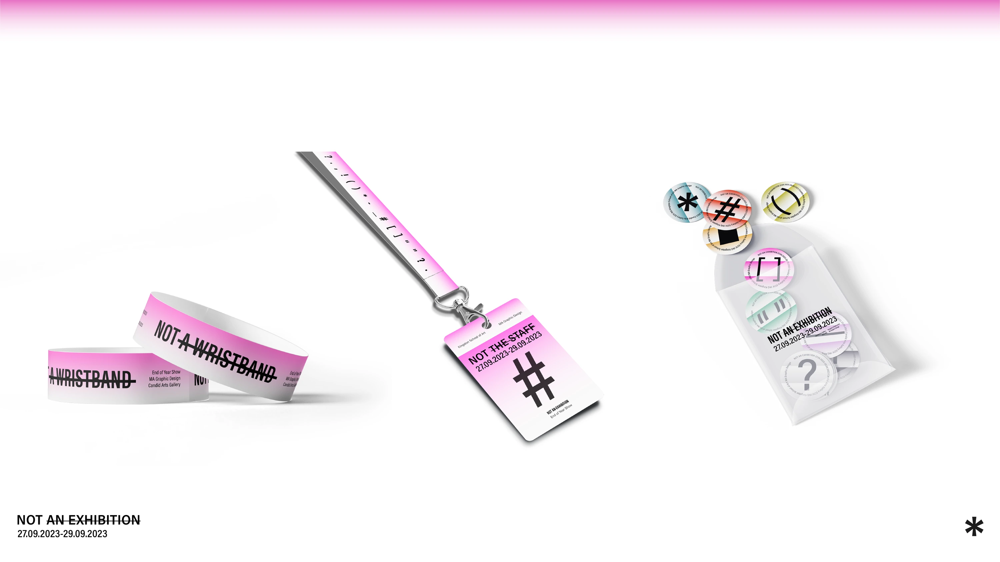
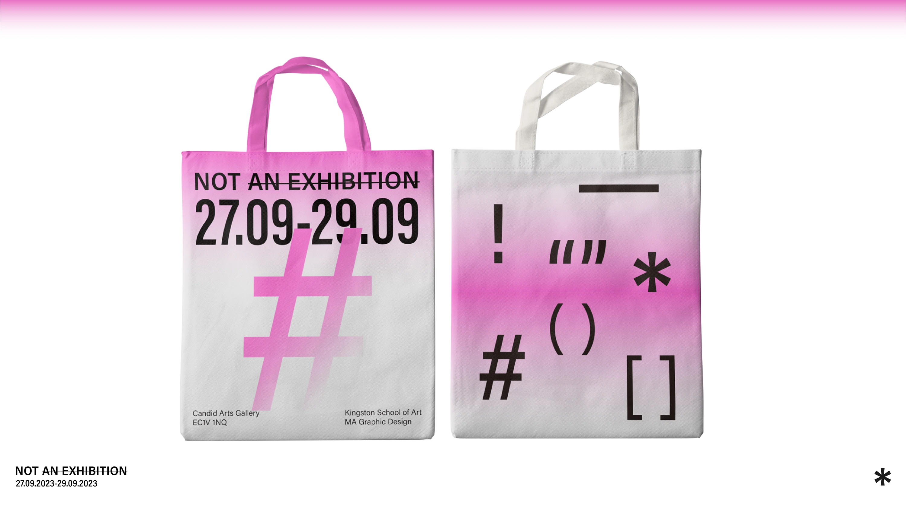

Not an Exhibition
这是 Kingston School of Art MA Graphic Design 毕业展的视觉策划小组提案。方案以「Not an Exhibition」为题，将粉色渐变、标点符号与字体排版发展为一套展览视觉，应用于海报、出版物、胸牌和手提袋。












这是 Kingston School of Art MA Graphic Design 毕业展的视觉策划小组提案。方案以「Not an Exhibition」为题，将粉色渐变、标点符号与字体排版发展为一套展览视觉，应用于海报、出版物、胸牌和手提袋。





